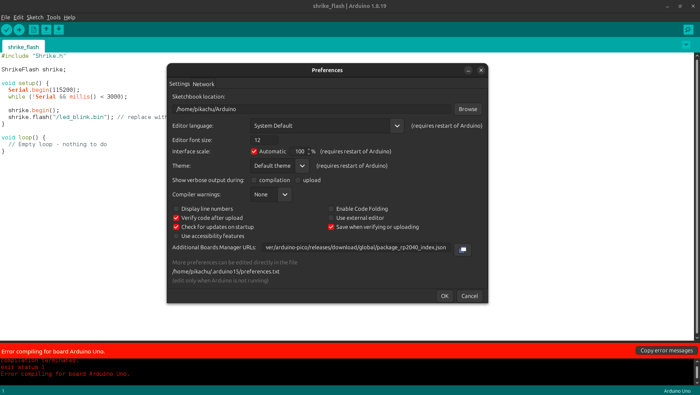
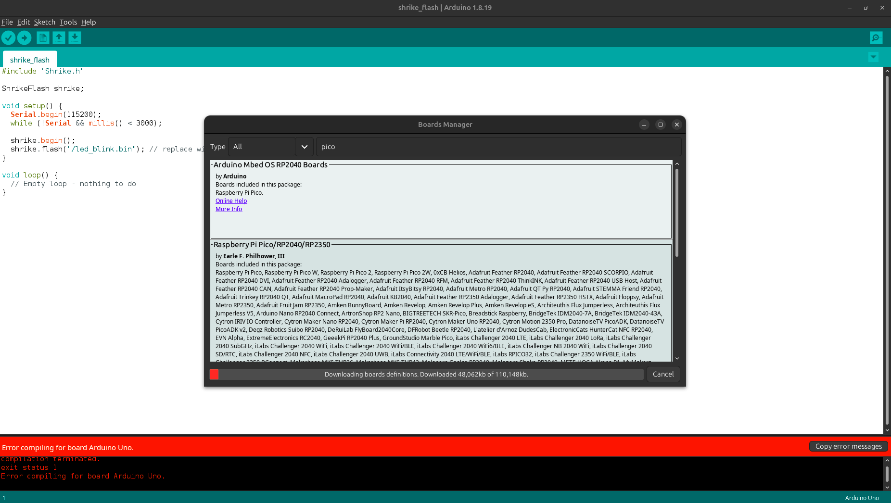
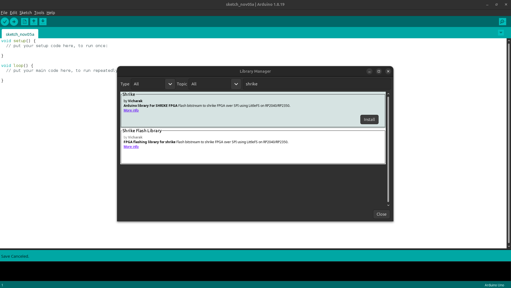

Getting Started (Blink LED)¶
In this guide, you will flash Shrike’s host microcontroller and blink the onboard FPGA LED using a pre-built bitstream (led_blink.bin).
Note
If you have not installed Arduino IDE, Thonny IDE, or esptool yet, complete Tools Setup first.
Choose your preferred microcontroller environment below — all three are beginner-friendly and you can switch between them at any time.
If you already know Arduino and prefer working in Arduino IDE 2.x, follow the steps below to configure board support, LittleFS upload support, and the Shrike library. (Need Arduino IDE? See Tools Setup.)
Step 1. Add Board Support
Arduino IDE does not bundle RP2040, RP2350, or ESP32-S3 cores by default. Add the board manager URL for your Shrike variant under File → Preferences → Additional Boards Manager URLs:
https://github.com/earlephilhower/arduino-pico/releases/download/global/package_rp2040_index.json
https://raw.githubusercontent.com/espressif/arduino-esp32/gh-pages/package_esp32_index.json
If you already have another URL listed, separate multiple URLs with a comma (,).

Next, open Tools → Board → Boards Manager:
Search for pico and install Raspberry Pi Pico/RP2040/RP2350 by Earle F. Philhower, III (see earlephilhower/arduino-pico).

Search for ESP32 and install esp32 by Espressif Systems.
Step 2. Install the LittleFS Upload Tool
On Shrike, the host MCU stores FPGA bitstreams in its onboard flash using the LittleFS filesystem and loads them into the FPGA at runtime.
Download the latest release ZIP of arduino-littlefs-upload.
Follow the Arduino IDE 2 LittleFS plugin installation guide (works for both RP2040/RP2350 and ESP32-S3 boards).
Restart Arduino IDE. You can verify installation by opening the Command Palette (
Ctrl+Shift+P/Cmd+Shift+P) and searching for LittleFS.
For full plugin details, see the arduino-littlefs-upload repository.
Step 3. Install the Shrike Library
Open Library Manager in Arduino IDE, search for Shrike, and install the official Shrike library developed by Vicharak.

Step 4. Flash Your First FPGA Bitstream
In Arduino IDE, open File → Examples → Shrike → shrike_flash and save a copy to a folder of your choice.
Inside that saved sketch folder, create a subfolder named
data(lowercase).Download the pre-built LED blink bitstream
led_blink.binand place it inside thedata/folder.Click Verify (Compile) to make sure the sketch builds without errors.
Connect your board in bootloader mode (hold the
BOOTbutton while plugging in USB — only needed on first Arduino flash or when switching from MicroPython/CircuitPython).Configure your board settings under Tools:
Board:
VICHARAK Shrike LiteorVICHARAK ShrikeFlash Size:
4MB (Sketch: 2MB, FS: 2MB)CPU Speed:
125 MHz
Board:
Generic ESP32-S3(or matching ESP32-S3 variant)Flash Size:
8MB (Sketch: 4MB, FS: 4MB)
Open the Command Palette (
Ctrl+Shift+P/Cmd+Shift+P), run Build LittleFS, and then run Upload LittleFS to copydata/led_blink.binto flash.Click Upload to flash the sketch. Once uploaded, the onboard blue FPGA LED should start blinking.
Tip
Credit and gratitude to Earle F. Philhower, III for maintaining arduino-pico and arduino-littlefs-upload. If you run into upload or compile issues, reach out on the Vicharak Discord.
Shrike uses a custom MicroPython firmware image that includes the built-in shrike module for flashing and resetting the FPGA.
Step 1. Flash the Shrike MicroPython Firmware
Download the
.uf2firmware matching your board variant from Shrike Releases.Hold the
BOOTbutton while connecting Shrike to your computer over USB. The board mounts as a USB mass-storage drive.Drag and drop the downloaded
.uf2file onto that drive.The drive disconnects automatically once flashing finishes.
Need a visual reference for UF2 drag-and-drop? See this generic RP2040 UF2 flashing walkthrough.
Note
After flashing the .uf2, Shrike reconnects as both a serial (ttyACM / COM) device and a USB mass-storage device (default label 5221-0000, which you can rename normally on Windows or via fatlabel on Linux).
Download the ESP32-S3
.binfirmware from Shrike Releases.Install
esptool(see Tools Setup or the Pythonvenvguide):pip install esptoolErase existing flash:
python -m esptool erase_flashWrite the Shrike-fi MicroPython firmware:
python -m esptool --chip esp32s3 -b 460800 --before default_reset --after hard_reset write_flash --flash_mode dio --flash_size 4MB --flash_freq 80m 0x0 firmware.bin
Step 2. Download the Test Bitstream
Download the pre-built led_blink.bin matching your board revision from test/bitstreams.
Step 3. Connect with Thonny IDE (or CLI)
You can upload bitstreams and run MicroPython code either via Thonny IDE (below) or via the terminal using mpremote (see the Shrike CLI Guide).
Open Thonny (see Tools Setup if not yet installed) and connect Shrike over USB without holding
BOOT.Select the MicroPython interpreter for your board in the bottom-right corner of Thonny.
Open View → Files so you can see both your computer’s files and Shrike’s onboard filesystem.
Step 4. Upload and Flash the Bitstream
In Thonny’s Files pane, right-click
led_blink.binon your computer and choose Upload to /.Create a new Python script in Thonny:
import shrike shrike.flash("led_blink.bin")Save the script to your Shrike board and run it (name it
main.pyto auto-flash the FPGA on every boot). The onboard FPGA LED should start blinking.
Note
When using your own custom Go Configure project, the bitstream file to copy is named FPGA_bitstream_MCU.bin inside your project’s ffpga/build/bitstream/ directory. You may rename the file after copying it, as long as you pass the same name to shrike.flash(...).
CircuitPython (by Adafruit) is a beginner-friendly Python implementation closely related to MicroPython. Shrike provides a custom CircuitPython .uf2 build with the built-in shrike FPGA library.
Step 1. Flash the Shrike CircuitPython Firmware
Download the CircuitPython
.uf2matching your board from Shrike Releases.Hold the
BOOTbutton while connecting Shrike to your computer over USB.Drag and drop the
.uf2file onto the mounted bootloader drive.Once copied, the drive unmounts and Shrike reboots as a CircuitPython mass-storage drive.
Need a visual reference? See this generic RP2040 UF2 flashing walkthrough.
Step 2. Copy the Test Bitstream
Download
led_blink.binfor your board revision fromtest/bitstreams.Copy
led_blink.bindirectly onto Shrike’s mounted USB drive.
Step 3. Connect with Thonny IDE
Open Thonny (see Tools Setup) and connect Shrike over USB without holding
BOOT.Select the CircuitPython interpreter from the bottom-right corner of Thonny.
Step 4. Flash the Bitstream
Create a new Python script in Thonny:
import shrike
shrike.flash("led_blink.bin")
Save the file to your Shrike drive and run it (name it code.py or main.py to run automatically on boot).
Note
When using your own custom Go Configure project, copy FPGA_bitstream_MCU.bin from your project’s ffpga/build/bitstream/ directory. You can rename it freely as long as the filename passed to shrike.flash(...) matches.
Next Steps¶
Now that you have verified your board with the pre-built led_blink.bin bitstream, continue to Generating Your First Bitstream to write and synthesize your own Verilog design in Go Configure Software Hub.